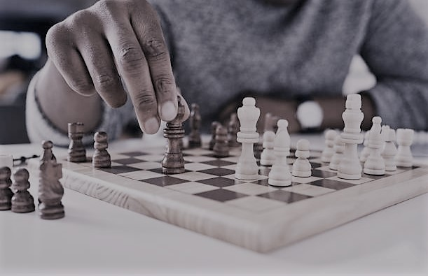

I really enjoy playing chess with my friends.
What makes chess my my favourite game is that it requires critical thinking around
research.
So one can only predict the winner if he what techniques the opponents has and how to over come them which literally
impossible.
Most times in abscence of people(friends), I play chess on my component however tough movements may be.
Below is an
image of my computer chess board.

The other hobby that enjoy is play pooltable.
This one requires high skills and regular practice for perfection and accuracy.
Pooltable playing involves two opponents and the
winner hits all his balls inside with the last black ball.
I also interested in reading novels concerning economics and
my favourite one Rich Dad Poor Dad by Robert Kiyosaki,erotic,spiritual
,sci-fictional and technological.